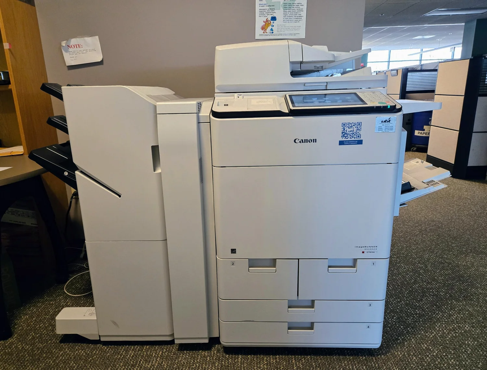
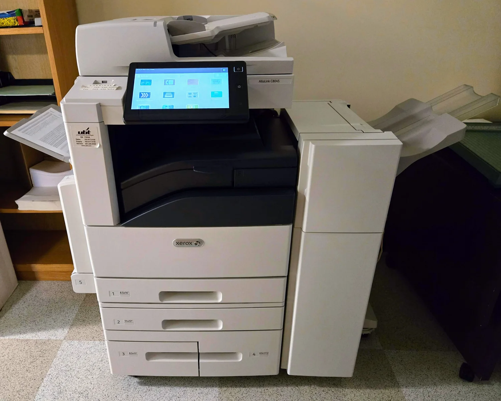

Justesse
Des préconisations fondées sur l'usage réel.
Votre matériel d'impression devrait vous simplifier la vie. AXEN vous aide à choisir des solutions adaptées à vos usages, à vos équipes et à votre quotidien.

L'ESPRIT AXEN
Un bon équipement ne se choisit pas uniquement sur une fiche technique. Il doit correspondre à la façon dont votre entreprise travaille.
AXEN place vos besoins au départ de chaque réflexion : volumes d'impression, nombre d'utilisateurs, formats, numérisation, environnement de travail et budget. Notre ambition : vous aider à faire le bon choix, sans complexité inutile.
Découvrir notre méthodeDes préconisations fondées sur l'usage réel.
Des solutions expliquées simplement.
Une réflexion qui va au-delà de l'achat.
NOS SOLUTIONS
Petite équipe ou environnement de travail plus exigeant : chaque usage mérite une réponse adaptée.

Impression, copie et numérisation réunies dans des équipements pensés pour les usages professionnels.
En savoir plusDes formats et des capacités adaptés à la fréquence d'utilisation et aux documents de votre activité.
En savoir plusFaciliter la capture, l'organisation et la circulation des documents au sein de votre entreprise.
En savoir plusFaire le point sur vos usages et envisager les ajustements pertinents pour mieux maîtriser votre environnement.
En savoir plusNOS SERVICES
Un projet d'impression ne s'arrête pas au choix d'une machine. L'environnement, les utilisateurs et la durée de vie du matériel comptent tout autant.
Les modalités d'installation, de suivi et d'assistance sont précisées selon votre projet et la prestation retenue.
Identifier les usages, les contraintes et le matériel adapté.
Définir les fonctions utiles : formats, couleur, scan et connectivité.
Préparer l'arrivée des équipements et leur adoption par les équipes.
Définir l'accompagnement et les modalités d'entretien adaptés.
NOTRE MÉTHODE
Nous privilégions une approche concrète : comprendre, proposer, mettre en place et accompagner.
Comprendre vos habitudes d'impression et vos attentes.
Identifier une solution cohérente avec vos besoins.
Organiser les étapes de votre projet et sa prise en main.
Réévaluer les usages lorsque votre activité change.
À CHAQUE ENTREPRISE SA SOLUTION
Pas de solution unique : un équipement pertinent dépend de votre fonctionnement, pas seulement de votre taille.
Un matériel simple à utiliser, choisi selon les volumes et les besoins de chacun.
Des documents nets et des usages pensés pour les environnements professionnels.
Des solutions conçues pour faciliter le travail de plusieurs utilisateurs ou services.
IMPRIMER PLUS JUSTE
Un parc d'impression cohérent commence par de bonnes habitudes : ajuster les volumes, encourager le recto verso lorsque c'est pertinent et choisir des fonctionnalités réellement utilisées.
QUESTIONS FRÉQUENTES
Une autre question sur votre projet ? Nous pourrons l'aborder lors d'un premier échange.
Le nombre d'utilisateurs, les volumes mensuels, les formats A4/A3, la couleur, les besoins de numérisation et votre organisation sont les premiers critères à examiner.
Une imprimante se concentre sur l'impression. Un équipement multifonction associe plusieurs usages, notamment la copie et la numérisation. Le meilleur choix dépend de votre quotidien.
Oui, une analyse des habitudes, des volumes et de la répartition des équipements aide à identifier d'éventuelles pistes de simplification et d'optimisation.
Le projet démarre par l'analyse de vos besoins. Les équipements et prestations sont ensuite à définir en fonction de votre situation et de vos attentes.
Les étapes sont établies selon le matériel et les prestations retenues : préparation, configuration, prise en main et modalités de suivi.
ON EN PARLE ?
Vous équipez de nouveaux locaux, faites évoluer votre parc ou souhaitez simplement y voir plus clair ? Parlons de vos usages et de votre projet.
Préparez votre demande. Aucun renseignement n'est transmis automatiquement par le site.